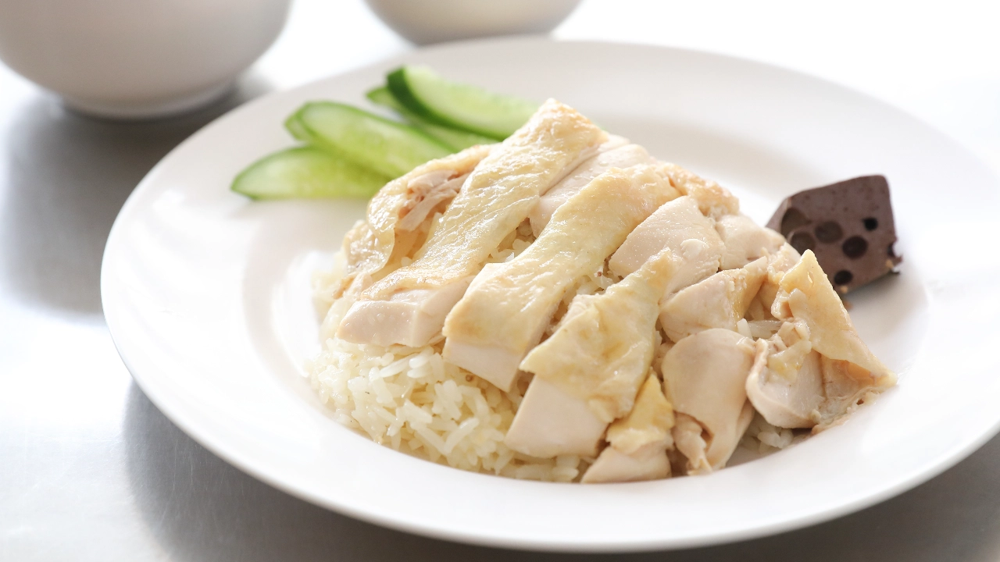

อาหารที่ชอบ
ข้าวมันไก่
วิธีการทำอาหาร
วัตถุดิบข้าวมันไก่
น่องไก่/สะโพกไก่/อกไก่ (ตามชอบ)
กระเทียม 3 - 4 หัว
รากผักชี 6 ราก
ขิงแก่หั่นเป็นแผ่นบาง 6 แผ่น
พริกไทย 30 เม็ด
เกลือ 1 ½ ช้อนโต๊ะ
น้ำตาลกรวด ½ ช้อนโต๊ะ
ข้าวสารดิบ 2 ถ้วยตวง
ซีอิ๊วขาว 3 ช้อนโต๊ะ
น้ำมันพืช ½ ช้อนโต๊ะ
แตงกวา
ผักชี
วิธีทำข้าวมันไก่
STEP 1 : ต้มไก่ + น้ำซุปฟัก
ต้มน้ำซุปต้มไก่ โดยใส่ รากผักชี กระเทียม พริกไทย ขิง น้ำตาลกรวด ซีอิ๊วขาว เกลือ เคี่ยวประมาณ 15 นาที นำไก่ลงไปต้มต่อจนไก่สุก ใช้เวลาประมาณ 30 นาที
นำไก่ที่สุกแล้วไปน็อกในน้ำผสมน้ำแข็ง จนไก่เย็น ใช้เวลาประมาณ 5 - 10 นาที แล้วนำไก่ขึ้นพักให้สะเด็ดน้ำ ทาด้วยน้ำมันพืชบาง ๆ ให้ทั่วชิ้นไก่ พักไว้
น้ำซุปที่ต้มไก่ให้ช้อนมันออกจากน้ำซุป เอาออกจนน้ำซุปใส ใส่ฟักที่หั่นแล้วลงไปต้ม ปรุงรสด้วยซีอิ๊ว และเกลือ ต้มจนฟักสุก
TIPS : การต้มไก่ควรใช้ไฟค่อนข้างอ่อน ต้มไปเรื่อย ๆ จะได้น้ำซุปใสเนื้อไก่สวยชวนกินเลยค่า
STEP 2 : ทำข้าวมันไก่
หุงข้าวมันไก่ โดยเจียวกระเทียมกับขิงแก่บุบจนหอม ใส่ข้าวสารดิบลงไป ผัดพอเข้ากัน ปรุงรสด้วยเกลือ น้ำมันไก่ที่ช้อนไว้ ผัดอีกรอบแล้วเทใส่หม้อหุงข้าว ใส่น้ำซุปต้มไก่ลงไป หุงจนข้าวสุก
วิธีทำน้ำจิ้มข้าวมันไก่
STEP 1 : ทำน้ำจิ้มข้าวมันไก่
ทำน้ำจิ้มโดยใส่ขิงซอย พริกขี้หนูหั่น เต้าเจี้ยว ซีอิ๊วดำหวาน มะนาว น้ำตาลทราย น้ำต้มสุก คนให้เข้ากัน กินคู่ข้าวมันไก่

สถานที่ที่ชอบ+บุคคลที่ชอบ
รูป หาดถ้ำพระนาง จังหวัดกระบี่
 เข้าดูวิดิโอ ชายหาดถ้ำพระนาง
หาดถ้ำพระนาง เป็นหนึ่งในไฮไลท์การท่องเที่ยวริมทะเลของจังหวัดกระบี่ สถานที่ท่องเที่ยวสวยที่สุดในไทย เป็นชายหาดขาวสะอาด ที่มีวิวหน้าผาหินปูนและถ้ำต่าง ๆ
เมื่อเดินไปสุดหาด จะพบกับถ้ำที่ล้อมรอบด้วยหาดทรายขาว และน้ำทะเลใส ในช่วงเที่ยงวันชายหาดจะเต็มไปด้วยนักท่องเที่ยว
ทั้งชาวไทยและชาวต่างชาติ เป็นสถานที่ท่องเที่ยวยอดนิยมตลอดทั้งปี
เข้าดูวิดิโอ ชายหาดถ้ำพระนาง
หาดถ้ำพระนาง เป็นหนึ่งในไฮไลท์การท่องเที่ยวริมทะเลของจังหวัดกระบี่ สถานที่ท่องเที่ยวสวยที่สุดในไทย เป็นชายหาดขาวสะอาด ที่มีวิวหน้าผาหินปูนและถ้ำต่าง ๆ
เมื่อเดินไปสุดหาด จะพบกับถ้ำที่ล้อมรอบด้วยหาดทรายขาว และน้ำทะเลใส ในช่วงเที่ยงวันชายหาดจะเต็มไปด้วยนักท่องเที่ยว
ทั้งชาวไทยและชาวต่างชาติ เป็นสถานที่ท่องเที่ยวยอดนิยมตลอดทั้งปี
Bit the ska
กฤษณ์ บุญญะรัง (เกิด 26 กันยายน พ.ศ. 2531)
ชื่อเล่น บอล เป็นที่รู้จักในชื่อ บี้เดอะสกา
เป็นยูทูบเบอร์ชาวไทย และเจ้าของบริษัท เดอะสกาฟิล์ม จำกัด โดยช่องของเขามีผู้ติดตามมากกว่า 14 ล้านผู้ติดตาม
ผู้จัดทำ
นายธิติวุฒิ ศิริทรัพย์ 66/96